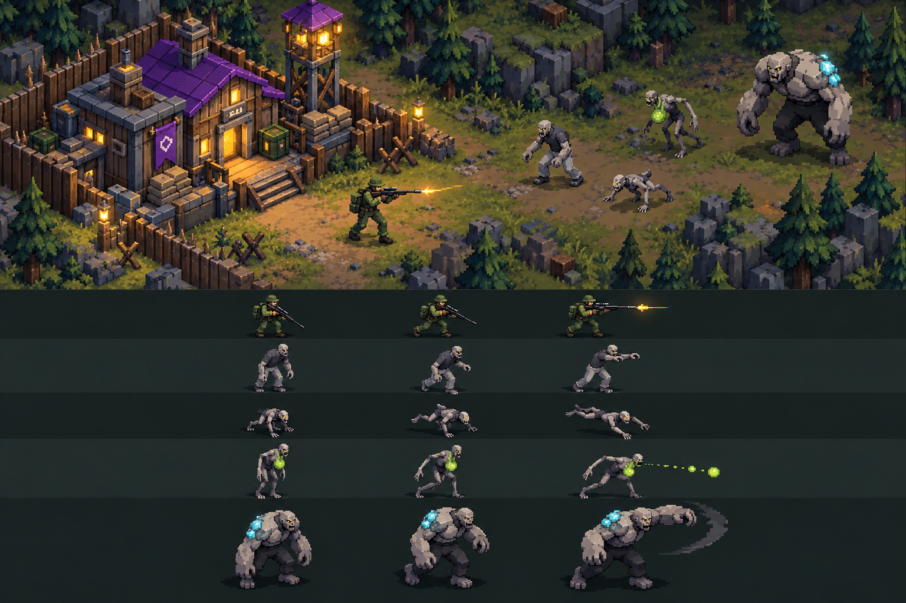

Whole-game visual study
One world, six ways to draw it
Every board uses the same HQ, light tower, green sniper, grey walker, low runner, lime-marked spitter, and cyan-marked brute. The upper scene tests how they read together; the lower rows test idle, movement, and attack poses in the same style. The newer focused pixel and diorama comparison refines the two favorites.
D. Brighter pixel
Open full-resolution board
World language
Bright, intentional pixel clusters and hard-edged forms. Purple HQ and warm practical lights stay vivid against the dark green field.
Movement read
Small quick runner, uneven walker, planted brute. The same blocky limb language carries through the human and enemy poses.
Production path
Closest to the selected D target. Reduce these concepts to a locked 24 x 32 logical unit grid, then build real directional frames.
Production check: None of these images are game-ready animation atlases. Once a direction is chosen, a rigged or carefully authored source needs fixed camera, scale, foot anchor, directional poses, frame timing, and testing at normal zoom and night lighting. The existing game art remains unchanged.